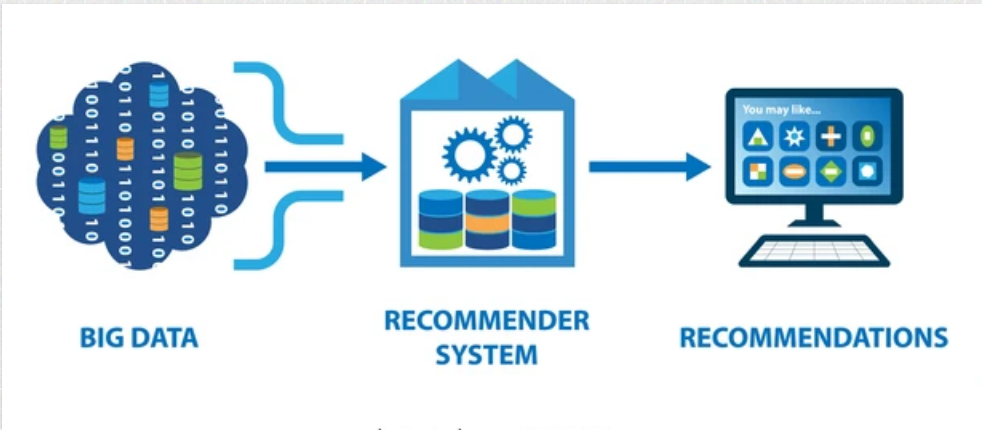

Conduct a comprehensive Exploratory Data Analysis (EDA) on the dataset to unveil meaningful insights, patterns, and trends. Utilize descriptive statistics and visualizations to effectively communicate key findings, facilitating a deeper understanding of the data's characteristics. The goal is to provide actionable information that can inform decision-making processes and support future analytical endeavors...
Interactive dashboard with Power Bi desktop
The primary objective of this project is to develop an interactive dashboard using Power BI that allows the company to analyze and understand the utility and margin of its various products in different regions. The dashboard will provide a holistic and detailed view of key sales-related metrics, facilitating strategic decision-making...
Time-Series Prediction
The project tries to predict the future weather of a city using weather-data from several other cities. Because we will be working with sequences of arbitrary length, we will use a Recurrent Neural Network (RNN)...
Anomaly detection with Isolation Forest
The datasets contains transactions made by credit cards in September 2013 by european cardholders. This dataset presents transactions that occurred in two days, where we have 492 frauds out of 284,807 transactions..
Customer Segmentation using KMeans
A fashion retail chain is looking to enhance its marketing strategy and customer service. They want to personalize their offers and promotions for different customer segments with the aim of increasing sales and customer loyalty. To achieve this, they decide to use information about their customers' Annual Income and Spending Score to segment them more effectively...

Recommendation systems
An online book-selling platform aims to enhance user experience by providing personalized recommendations. They recognize the importance of offering relevant suggestions based on individual user tastes to increase customer satisfaction and encourage platform loyalty...
Applications with flutter
Github repository of app that I developed in flutter as a hobby